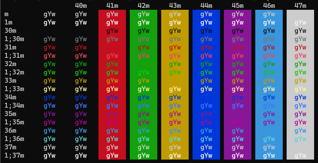

Windows Terminal
Colorful for text output [1]
ANSI-Escape-Sequences can be used to tell the Windows Terminal to print text in various colors. It is possible to define a text color and a background color. The Windows Terminal application supports the 8-Bit colors, although standard and bright colors are sometimes not differentiable (e.g. green foreground).
Hint
The Windows Console uses an old protocol named VT100 which invented in the late 70s, featuring control commands. Those were mostly used to tell the displaying terminal what to do, like cleaning the screen or position the cursor. Later, colors were supported, though only a limited set. The commands remain unchanged until today.
The valid sequences are:
Color |
Foreground |
Background |
|---|---|---|
Black |
ESC[30m |
ESC[40m |
Red |
ESC[31m |
ESC[41m |
Green |
ESC[32m |
ESC[42m |
Yellow |
ESC[33m |
ESC[43m |
Blue |
ESC[34m |
ESC[44m |
Violet |
ESC[35m |
ESC[45m |
Turquoise |
ESC[36m |
ESC[46m |
Bright Grey |
ESC[37m |
ESC[47m |
Dark Grey |
ESC[90m |
ESC[100m |
Bright Red |
ESC[91m |
ESC[101m |
Bright Green |
ESC[92m |
ESC[102m |
Bright Yellow |
ESC[93m |
ESC[103m |
Bright Blue |
ESC[94m |
ESC[104m |
Bright Violet |
ESC[95m |
ESC[105m |
Bright Turquoise |
ESC[96m |
ESC[106m |
White |
ESC[97m |
ESC[107m |
RESET |
ESC[39m |
ESC[49m |
Here ESC stands for the special character Escape (ASCII-Code 27, 0x1b).
Most terminals support various color schemes, which map an color code to a specific color defined in RGB values. The ColorTool from Windows Terminal, for instance, displays the default Campbell scheme like this:
The bright colors start with 1; (for example, 1;32m for bright green) which is another valid way to write the escape codes.
Important
Some terminals do not differentiate between standard and bright colors or use different colors schemes. So expect different results when using another Terminal. In Windows Terminal, the scheme can be defined in . Additional themes can be downloaded from https://terminalsplash.com/ and copied into the config JSON via (lower left corner).
These sequences start with the unprintable Escape character. To enter it, create it by opening a PowerShell window and type
Set-Clipboard ([char]27)which puts the character into the clipboard for further usage (The escape character has the ANSI-Code 27).
Open the script, which is supposed to print colored text. Optionally, define the Escape character as variable. Here for batch:
set ESC=
where the square is the pasted Escape character (might be displayed differently, depending on the used editor)
Stating an ANSI-Escape-Sequence for color changes the color from that character onwards. So to properly colorize a certain section of a printed text
its beginning must set the formatting to the desired color
at its end, the formatting must be set back to default
Example:
set ESC= echo standard text - %ESC%[40mred text%ESC%[39m
which renders to:
standard text - red text
%ESC%[40mdefines a red text, whereas%ESC%[39msets it back to default.To define both a foreground and a background color, they can be put together in one expression:
set ESC= echo %ESC%[35;101mViolet text on bright red background%ESC%[39;49m
Here, foreground and background must be reset afterwards.